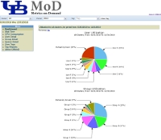
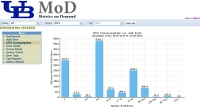

UBMoD (UB Metrics on Demand) is an open source tool for collecting and mining statistical data from cluster resource managers (such as TORQUE, OpenPBS, and SGE) commonly found in high-performance computing environments. It has been developed by the Center for Computational Research at the University at Buffalo, SUNY and presents resource utilization including CPU cycles consumed, total jobs, average wait time, etc. for individual users, research groups, departments, and decanal units. The web-based user interface provides a dashboard for displaying resource consumption along with fine-grained control over the time period and resources displayed. The data warehouse can easily be customized to support new resource managers. The information presented in easy-to-understand charts and tables and provides system administrators, users, and directors of HPC centers with a rich set of metrics to better understand how their resources are being utilized. The current release, which was completely re-written in PHP, adds the ability to apply custom tags to users and jobs and to then filter all reports using those tags. This provides complete flexibility for organizing users into departments, projects, and groups. For example, users can be tagged as members of one or more projects and reports can be dynamically generated for those projects.
For more information, questions, or feedback send email to ubmod at ccr.buffalo.edu. If you find UBMoD useful and modify the default template we ask that you please keep the "Powered By UBMoD" logo with a link back to CCR (http://www.ccr.buffalo.edu). Thanks!
UBMoD is an open source project released under the GNU General Public License ("GPL") Version 3.0. You can obtain a copy of the license here.
|  |  |
 |
 |
{kind=link}
{kind=link}